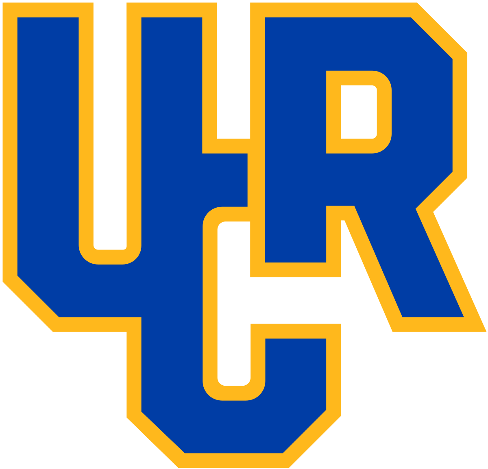
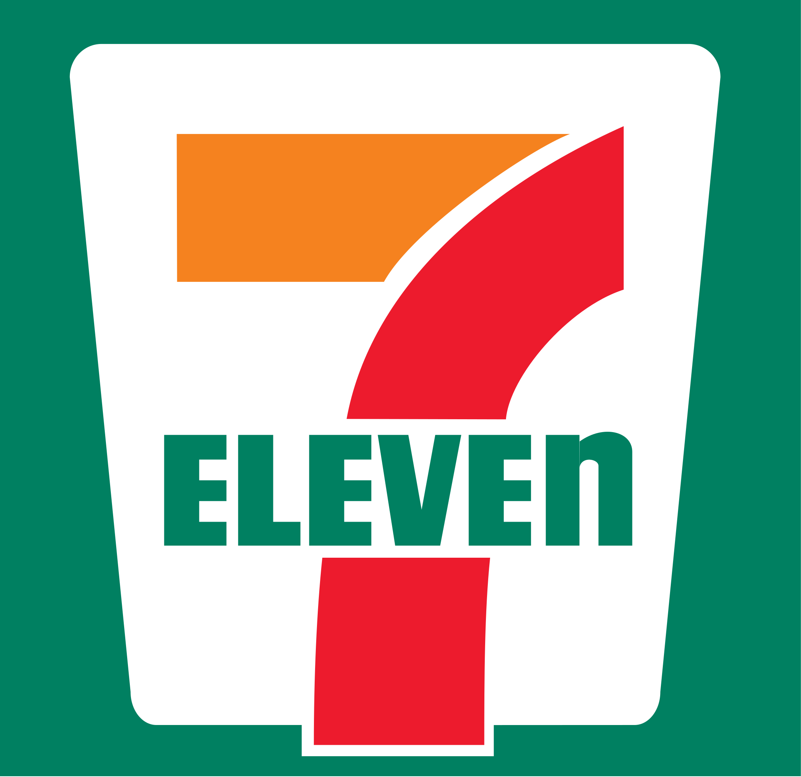
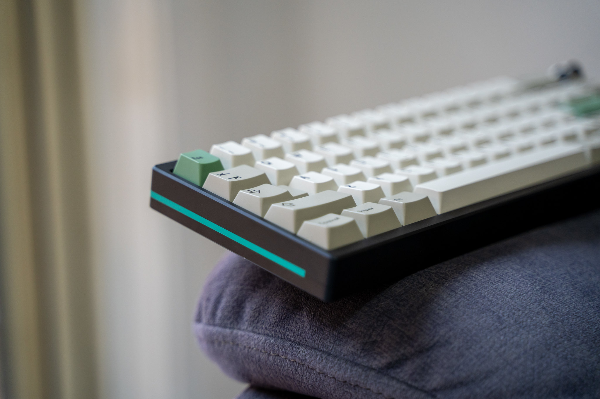
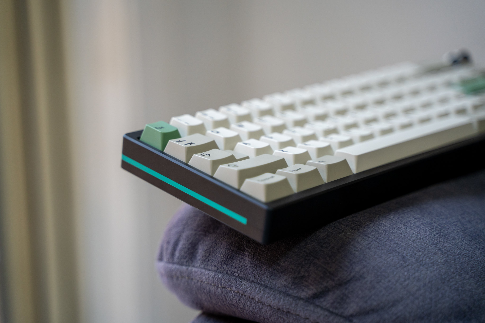
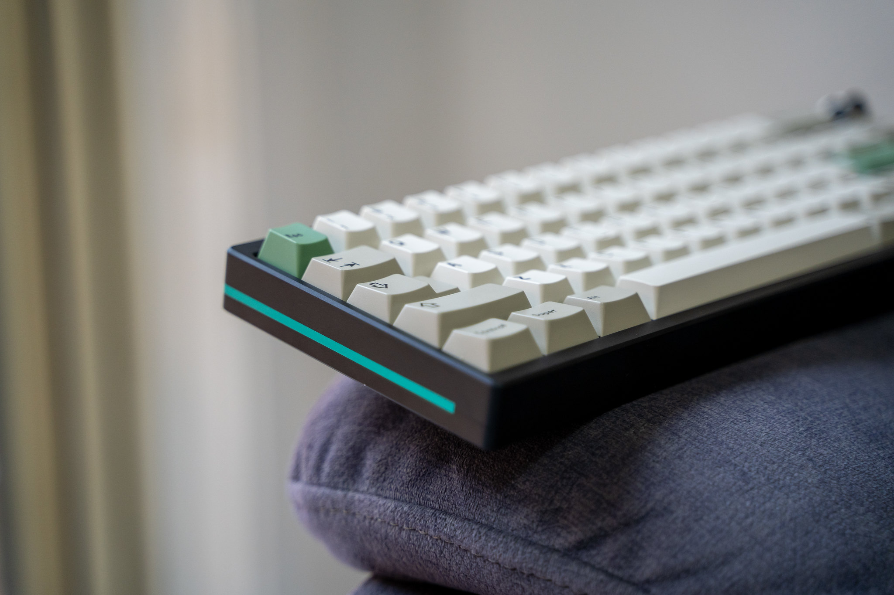

Brandon Cheuk
Hello, as the CEO of Coca-Cola, one of the most recognizable and beloved brands in the world. I am the visionary leader with a passion for innovation, my tenure at Coca-Cola has been marked by a series of transformative initiatives that have helped to redefine the company and its role in the global marketplace. In my journey to the top of Coca-Cola began early in my early career, when I first joined the company as a marketing executive. I quickly proved its worth, bringing a fresh perspective to the way the company approached its advertising and branding efforts. My insights and creative approach helped to reinvigorate Coca-Cola's image, and I was soon promoted to increasingly senior roles within the company. As I rose through the ranks at Coca-Cola, I continued to push the envelope and challenge the status quo. I spearheaded the development of several new product lines, including a line of health-conscious beverages that quickly became popular with consumers. I also helped to lead the company's push into emerging markets, leveraging my deep understanding of global consumer trends to create innovative marketing campaigns and distribution strategies.
In recognition of my contributions to the company's success, I was ultimately named CEO of Coca-Cola, a position I have held for several years now. Under my leadership, the company has continued to thrive, with revenues and profits reaching record highs. I have overseen a major overhaul of the company's corporate structure, streamlining operations and improving efficiency across the board. But perhaps my greatest legacy at Coca-Cola has been my commitment to sustainability and social responsibility. I recognized early on that consumers were increasingly demanding that companies like Coca-Cola take a more active role in addressing pressing social and environmental issues, and I have been at the forefront of the company's efforts to do just that. From reducing the company's carbon footprint to supporting community-based initiatives around the world, I have made sustainability a key pillar of Coca-Cola's corporate philosophy.
Despite all my accomplishments, however, I remain humble and focused on the future. I understand that the world is changing rapidly, and that Coca-Cola must continue to evolve in order to remain relevant and competitive. I are constantly exploring new ideas and innovations, looking for ways to leverage the power of technology and data to better understand and connect with consumers.
In short, I am a true visionary and a force to be reckoned with in the world of business. My tenure as CEO of Coca-Cola has been marked by remarkable success, and there is no doubt that My impact on the company and the industry as a whole will be felt for years to come. However, my hobbies include, building keyboards, creating loan plans for smaller companies to succeed in the future, in order for them to be praised to be a successful business. Additionally, I love watching anime and TV shows in my downtime and I would love to meet the president of the united states one day.
Experience
Keyboard Builder for Puzzl.co
• Built and designed multiple keyboards for Puzzl.co
• Chief Manager for the Design Deparment
• Experience with Photoshop, Blender and Excel
Kiva Club
• Assist with financial statements within the Club
• Lending out loans to small businesses
• Writing Powerpoint slides as proposals
• Find sources for funding for the school club
Education
UC Riverside
Portfolio


 

